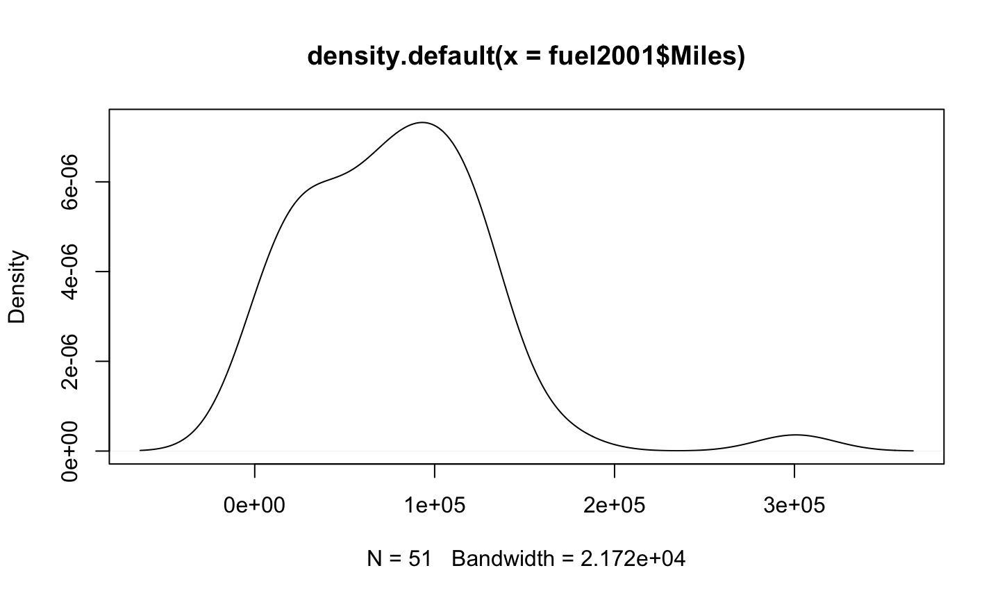
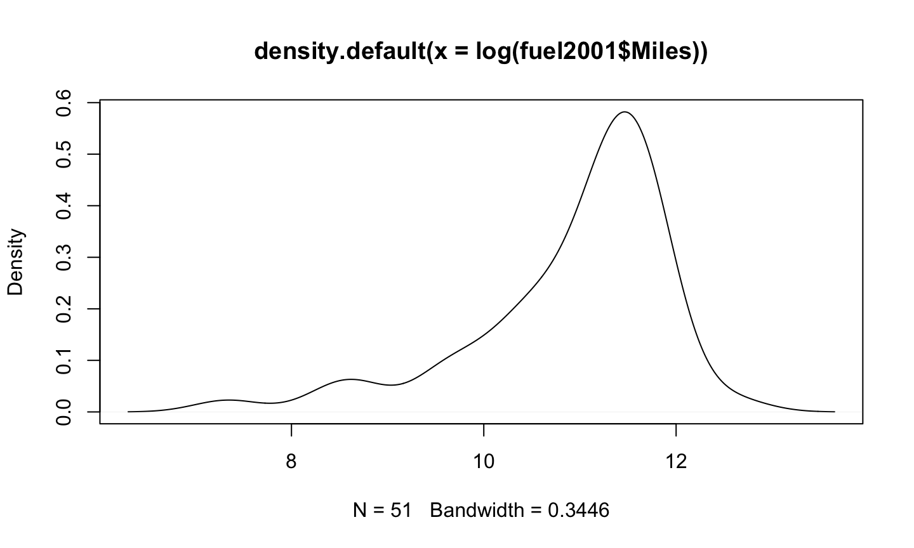
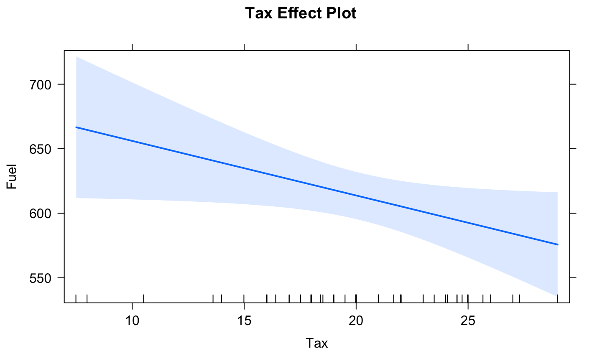
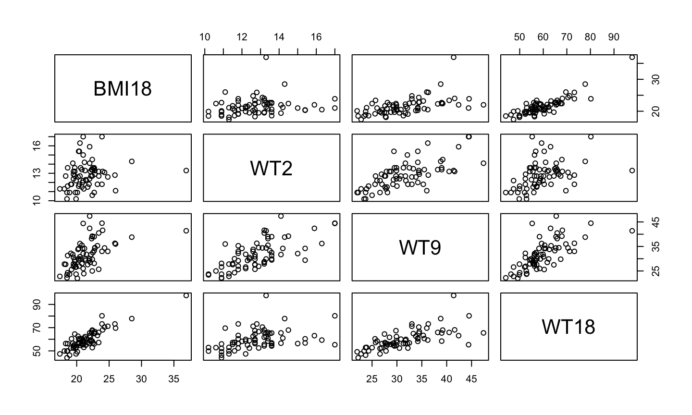
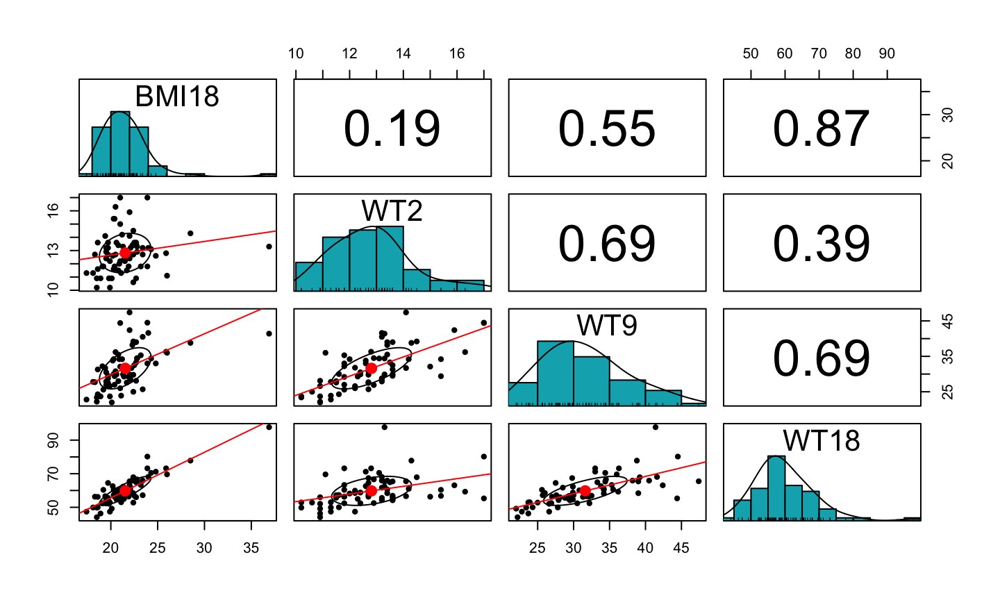
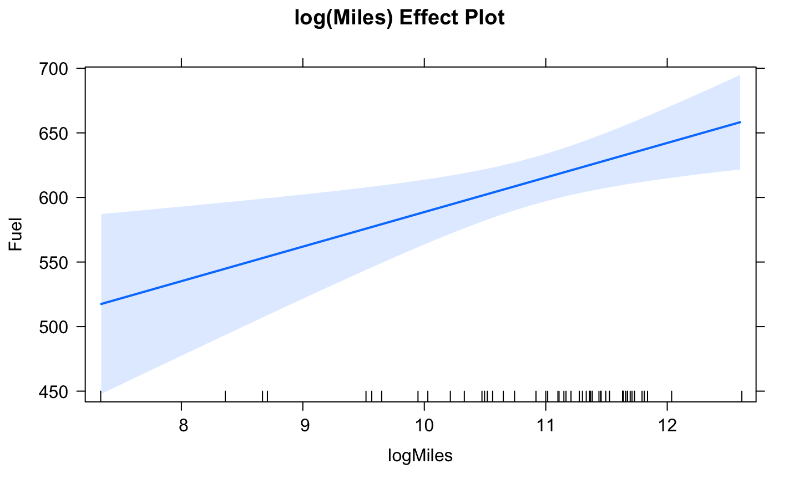
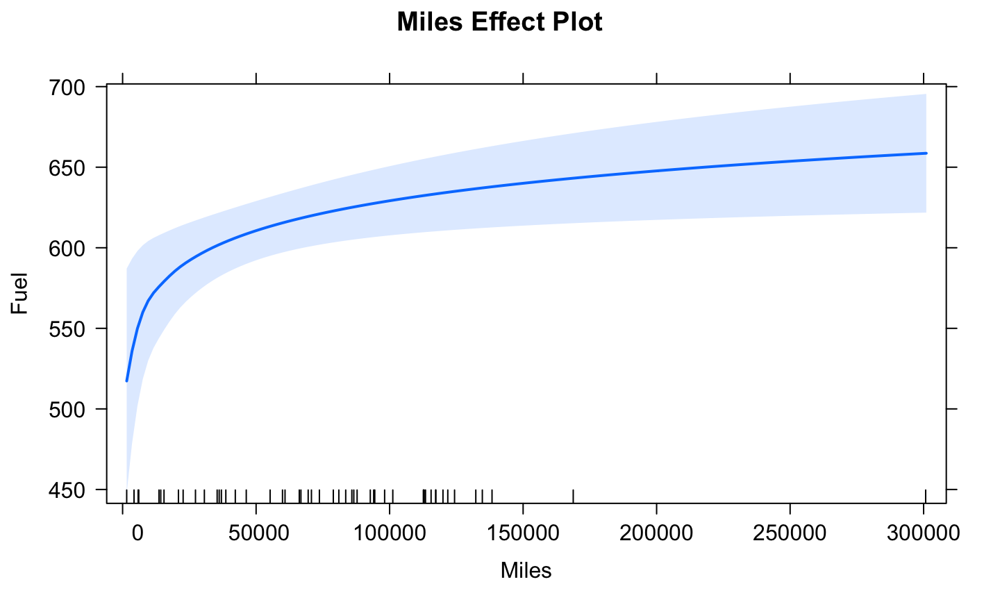

6/3/2020
What is the relationship between fuel consumption and various regressors for the 50 United States and the District of Columbia? The variables (measured in 2001 unless otherwise noted) are:
Drivers – Number of licensed drivers in the stateFuelC - Gasoline sold for road use (1K gallons)Income – Personal income for the year 2000 (dollar/person)Miles - Miles of Federal-aid highway miles in the statePop - 2001 population age 16 and overTax - Gasoline state tax rate (cents/gallon)We transform some of these variables to obtain:
Fuel – 1000 \(\times\) FuelC/Pop (Gallons/person)Income1K – Income/1000 ($1K/person)Dlic - 1000 \(\times\) Drivers/Pop (licensed drivers/1K persons)log(Miles) – Natural logarithm of MilesConsider the regression model
E(Fuel│Tax,Dlic,Income1K,Miles)=\(\beta_0\)+\(\beta_1\) Tax+\(\beta_2\) Dlic+\(\beta_3\) Income1K+\(\beta_4\) loga(Miles).
Milesdata(fuel2001, package='alr4') plot(density(fuel2001$Miles))

log(Miles)plot(density(log(fuel2001$Miles)))

## ## Call: ## lm(formula = Fuel ~ Tax + Dlic + Income1K + logMiles, data = fuel2001) ## ## Residuals: ## Min 1Q Median 3Q Max ## -163.145 -33.039 5.895 31.989 183.499 ## ## Coefficients: ## Estimate Std. Error t value Pr(>|t|) ## (Intercept) 154.1928 194.9062 0.791 0.432938 ## Tax -4.2280 2.0301 -2.083 0.042873 * ## Dlic 0.4719 0.1285 3.672 0.000626 *** ## Income1K -6.1353 2.1936 -2.797 0.007508 ** ## logMiles 26.7552 9.3374 2.865 0.006259 ** ## --- ## Signif. codes: 0 '***' 0.001 '**' 0.01 '*' 0.05 '.' 0.1 ' ' 1 ## ## Residual standard error: 64.89 on 46 degrees of freedom ## Multiple R-squared: 0.5105, Adjusted R-squared: 0.4679 ## F-statistic: 11.99 on 4 and 46 DF, p-value: 9.331e-07
The fitted model is:
\(\hat{E}\)(Fuel│Tax,Dlic,Income1K,Miles)=154.19-4.24 Tax+0.47 Dlic-6.14 Income1K+26.76 loga(Miles)
This equation represents the estimated conditional mean of Fuel given fixed values of the regressors Tax, Dlic, Income1K, and Miles.
The \(\beta\)-coefficients (slopes or partial slopes) have units.
The intercept is 154.19 gallons per person.
The coefficient for Income1K must be in gallons per person per thousand dollars per person (i.e., (gallons/person)/($1K/person).
The units for the coefficient for Tax is gallons per person per cent of tax per gallon (gallons/person)/(cents/gallon).
Estimated coefficients are usually interpreted as a rate of change.
Example: If a state was identical to another state except that its Tax rate was 1 cent/gallon more than the other state, then we predict its Fuel consumption will be about 4.24 gallons/person less than the other state.
Consider the regression model
\[E(Y|X) = \beta_0 X_1 + \beta_1 X_2 + \beta_3 X_3\] The predicted value when \(X_1 = x_1\), \(X_2 = t\), and \(X_3 = x_3\)
\[E(Y|[x_1,t,x_3]) = \beta_0 x_1 + \beta_1 t + \beta_3 x_3\]
Consider the regression model
\[E(Y|X) = \beta_0 X_1 + \beta_1 X_2 + \beta_3 X_3\] The predicted value when \(X_1 = x_1\), \(X_2 = t\), and \(X_3 = x_3\)
\[E(Y|[x_1,t,x_3]) = \beta_0 x_1 + \beta_1 t + \beta_3 x_3\]
What happens if we change \(X_2\) to \(t+1\) keeping \(X_1\) and \(X_3\) same?
\[E(Y|[x_1,t+1,x_3]) = \beta_0 x_1 + \beta_1 (t+1) + \beta_3 x_3\]
Consider the regression model
\[E(Y|X) = \beta_0 X_1 + \beta_1 X_2 + \beta_3 X_3\] The predicted value when \(X_1 = x_1\), \(X_2 = t\), and \(X_3 = x_3\)
\[E(Y|[x_1,t,x_3]) = \beta_0 x_1 + \beta_1 t + \beta_3 x_3\]
What happens if we change \(X_2\) to \(t+1\) keeping \(X_1\) and \(X_3\) same?
\[E(Y|[x_1,t+1,x_3]) = \beta_0 x_1 + \beta_1 (t+1) + \beta_3 x_3\]
The difference \[E(Y|[x_1,t+1,x_3]) - E(Y|[x_1,t,x_3])= \beta_1 \]
An effect plot is used to visualize the effect of a regressor on the mean response while holding the other regressors at their mean values.
What is the effect of Tax on expected Fuel consumption when the other regressors are fixed at their sample mean values?
\(\hat{E}\)(Fuel│Tax,Dlic=903.68,Income1K=28.4,loga(Miles)=10.91)
=154.19-4.23 Tax+0.47(903.68)-6.14(28.4)+26.76(10.91)
=606.92-4.23 Tax.
library('effects')
plot(predictorEffect("Tax",fuel_mod), main = "Tax Effect Plot", focal.levels = c())

What if we fixed the other regressors at different values? i.e., not their sample means?
The sign of a parameter estimate indicates the direction of the relationship between the regressor and the response after adjusting for all other regressors in the mean function.
The sign of the effect of a regressor is often more important than its magnitude.
If regressors are highly correlated, both the magnitude and sign of an estimated coefficient may change depending on what other regressors are in the model.
Regressors can play different roles in a model depending on what other variables are in a model.
Example: Berkeley Guidance Study
Data from the Berkeley Guidance Study on the growth of boys and girls is provided in the BGSgirls data set in the alr4 package.
data("BGSgirls", package= 'alr4')
library(ggplot2)
pairs(BGSgirls[,c('BMI18', 'WT2','WT9','WT18')])

library(psych)
pairs.panels(BGSgirls[,c('BMI18', 'WT2','WT9','WT18')], method = 'pearson', hist.col = "#00AFBB", lm = T, ellipses = T)

We cannot simply do three separate simple regressions, because we must account for the correlations between the predictors.
Note: Since the marginal relationships between the response and predictors are approximately linear, it doesn’t appear we need to transform the predictors before including them in our model.
lmod1 = lm(BMI18 ~ WT2 + WT9 + WT18, data = BGSgirls) summary(lmod1)$coefficients
## Estimate Std. Error t value Pr(>|t|) ## (Intercept) 8.30977995 1.65517498 5.0204843 4.156122e-06 ## WT2 -0.38663273 0.15145143 -2.5528496 1.300465e-02 ## WT9 0.03140967 0.04937039 0.6362047 5.268432e-01 ## WT18 0.28744733 0.02602646 11.0444256 1.203260e-16
lmod1 = lm(BMI18 ~ WT2 + WT9 + WT18, data = BGSgirls) summary(lmod1)$coefficients
## Estimate Std. Error t value Pr(>|t|) ## (Intercept) 8.30977995 1.65517498 5.0204843 4.156122e-06 ## WT2 -0.38663273 0.15145143 -2.5528496 1.300465e-02 ## WT9 0.03140967 0.04937039 0.6362047 5.268432e-01 ## WT18 0.28744733 0.02602646 11.0444256 1.203260e-16
We get the unexpected result that a heavier baby is associated with a lower BMI as an adult.
Since all of the predictors are weights, we combine them to create new regressors:
DW9 = WT9 – WT2 = Weight gain from age 2 to 9 DW18 = WT18 – WT2 = Weight gain from age 2 to 18
We fit:
BGSgirls$DW9 = BGSgirls$WT9 - BGSgirls$WT2 BGSgirls$DW18 = BGSgirls$WT18 - BGSgirls$WT2 lmod2 = lm(BMI18 ~ WT2 + DW9 + DW18, data = BGSgirls) summary(lmod2)
## ## Call: ## lm(formula = BMI18 ~ WT2 + DW9 + DW18, data = BGSgirls) ## ## Residuals: ## Min 1Q Median 3Q Max ## -3.1037 -0.7432 -0.1240 0.8320 4.3485 ## ## Coefficients: ## Estimate Std. Error t value Pr(>|t|) ## (Intercept) 8.30978 1.65517 5.020 4.16e-06 *** ## WT2 -0.06778 0.12751 -0.532 0.597 ## DW9 0.03141 0.04937 0.636 0.527 ## DW18 0.28745 0.02603 11.044 < 2e-16 *** ## --- ## Signif. codes: 0 '***' 0.001 '**' 0.01 '*' 0.05 '.' 0.1 ' ' 1 ## ## Residual standard error: 1.333 on 66 degrees of freedom ## Multiple R-squared: 0.7772, Adjusted R-squared: 0.767 ## F-statistic: 76.73 on 3 and 66 DF, p-value: < 2.2e-16
lmod3 = lm(BMI18 ~ WT2 + WT9 + WT18 + DW9 + DW18, data = BGSgirls) summary(lmod3)
## ## Call: ## lm(formula = BMI18 ~ WT2 + WT9 + WT18 + DW9 + DW18, data = BGSgirls) ## ## Residuals: ## Min 1Q Median 3Q Max ## -3.1037 -0.7432 -0.1240 0.8320 4.3485 ## ## Coefficients: (2 not defined because of singularities) ## Estimate Std. Error t value Pr(>|t|) ## (Intercept) 8.30978 1.65517 5.020 4.16e-06 *** ## WT2 -0.38663 0.15145 -2.553 0.013 * ## WT9 0.03141 0.04937 0.636 0.527 ## WT18 0.28745 0.02603 11.044 < 2e-16 *** ## DW9 NA NA NA NA ## DW18 NA NA NA NA ## --- ## Signif. codes: 0 '***' 0.001 '**' 0.01 '*' 0.05 '.' 0.1 ' ' 1 ## ## Residual standard error: 1.333 on 66 degrees of freedom ## Multiple R-squared: 0.7772, Adjusted R-squared: 0.767 ## F-statistic: 76.73 on 3 and 66 DF, p-value: < 2.2e-16
Model 1: BMI18 ~ WT2 + WT9 + WT18
Model 2: BMI18 ~ WT2 + DW9 + DW18
Model 3: BMI18 ~ WT2 + WT9 + WT18 + DW9 + DW18
| Model1 | Model2 | Model3 | |
|---|---|---|---|
| (Intercept) | 8.3098 | 8.3098 | 8.3098 |
| WT2 | -0.3866 | -0.0678 | -0.3866 |
| WT9 | 0.0314 | . | 0.0314 |
| WT18 | 0.2874 | . | 0.2874 |
| DW9 | . | 0.0314 | NA |
| DW18 | . | 0.2874 | NA |
The coefficient for WT2 is 1/5 the size in Model 2 in comparison with Model 1 (and is also insignificant, i.e., not statistically different from 0).
In Model 1, the effect of WT2 seems to be negative and significant, while in Model 2 we cannot conclude the effect is different from 0.
When regressors are correlated, interpretation of the effect of a regressor depends not only on the other regressors in the model, but also upon the linear transformation of the variables used.
Why are there NAs for the third model?
The last two coefficients in the third model were not estimable because the model was overparameterized (some of the regressors were linear combinations of the others).
R automatically drops the last regressors added to the model until the matrix X becomes full rank (and the parameters become estimable).
Logarithms are commonly used both for the response and for regressors.
Decibels (loudness), Richter scale (earthquake intensity), and pH levels (acidity) are all examples of logarithmic scales.
Predictors that span several orders of magnitude should be transformed to the log scale.
The regressor log(Miles) in the fuel consumption data uses natural logarithms.
The effects plot for log(Miles) is a straight line (similar to Tax), but the effects plot for Miles on the original scale is different.
plot(predictorEffect("logMiles",fuel_mod), main = "log(Miles) Effect Plot", focal.levels = c())

data(fuel2001, package = 'alr4')
fuel2001 <- transform(fuel2001,
Dlic=1000 * Drivers/Pop,
Fuel=1000 * FuelC/Pop,
Income1K=Income/1000)
fuel_mod = lm(Fuel ~ Tax + Dlic + Income1K + log(Miles), data = fuel2001)
plot(predictorEffect("Miles",fuel_mod), main = "Miles Effect Plot", focal.levels = c())

The effect of increasing Miles is greater in states with fewer miles of roadway, with relatively little change in states with the most roadway.
This is the usual effect of logarithms: the fitted effect changes most rapidly when the regressor is small and less rapidly when the predictor is large.
Recall that \(y = log_bx\) is chosen so that \(b^y=x.\)
Thus, \(\log_2(64)=6\), \(\log_{10}(10)=1\), and \(\log_e(e)=1\)
We typically interpret changes on the log scale in relation to changing the predictor by the multiplicative effect \(c\).
Concentrating on the \(j\)th regression coefficient, we let \(X_{(j)}\), \(x_{(j)}\), and \(\beta_{(j)}\) denote, respectively, all predictors excluding \(X_j\), the observed values of the predictors excluding \(x_j\), and all coefficients excluding \(\beta_j\) and \(\beta_0.\)
Determine the change in the mean response when \(X_j\) changes from \(x_j\) to \(cx_j\) for a natural log transformation assuming \(E(Y│X)=\beta_0+\beta_j \log(X_j)+\beta_{(j)} X_{(j)}\).
Interpret the Miles predictor from the Fuel example:
Determine the change in the mean response when \(X_j\) changes from \(x_j\) to \(cx_j\), when \(c=10\) for a \(\log_{10}\) transformation assuming that \(E(Y│X)=\beta_0+\beta_j + \log_{10}(X_j) + \beta_{(j)} X_{(j)}\).
Imagine that we had used a log base 10 transformation for Miles in the Fuel example. In that case, the fitted model is
\(\hat{E}\)(Fuel│Tax, Dlic, Income1K, Miles) = 154.19 - 4.24 Tax + 0.47 Dlic - 6.14 Income1K + 61.61 \(\log_{10}\)(Miles).
Interpret the impact of Miles on Fuel.
It is common for responses to be transformed to a logarithmic scale for theoretical or practical considerations.
If the response is \(\log(Y)\)), it is still technically correct to interpret the regression coefficients as describing the expected change in the logarithmic response for a unit increase in the associated regressor, holding the other regressors constant.
In this setting, our regression model is
\[E\left[\log(Y)|X_j=x_j, X_{(j)}=x_{(j)}\right] = \beta_0 +\beta_1x_j +\beta_{(j)}x_{(j)}\]
It is frequently acceptable to approximate the expected value of a log by the log of the expected value, i.e.
\[E\left[\log(Y)|X_j=x_j, X_{(j)}=x_{(j)}\right] \approx \log E\left[Y|X_j=x_j, X_{(j)}=x_{(j)}\right]\]
Use this fact to show that \[E\left[Y|X_j=x_j+1, X_{(j)}=x_{(j)}\right] \approx \exp(\beta_j) E\left[Y|X_j=x_j, X_{(j)}=x_{(j)}\right]\]
A unit increase in \(X_j\) (the other regressors remaining constant) is associated with a change in the mean \(Y\) by the multiplicative effect \(\exp(\beta_j)\)
Interpret the relationship between \(X_j\) and the mean of \(Y\) when \(X_j\) increases by 1 unit and \(β_j=0.3\) and the other predictors do not change.
If both the regressor and the response are in \(\log\) scale, then increasing the regressor by 1 unit corresponds to multiplying the predictor by e (which isn’t a helpful interpretation).
If \(X_j\) is our predictor and \(\log(X_j)\) is our regressor, we consider \(X_j\) changing from \(x_j\) to \(cx_j\). In that case the regressor becomes \(\log(cx_j)=\log(c) +\log(x_j)\).
Assume \[E\left[\log(Y)||X_j=x_j,X_{(j)}=x_{(j)} \right] = \beta_0 +\beta_1 \log x_j +\beta_{(j)}x_{(j)}\]
How does the expected response change if \(X_j\) changes from \(x_j\) to \(cx_j\) (and all other predictors stay the same)?
Interpret the relationship between \(X_j\) and the mean of \(Y\) when \(X_j\) increases by 10% and \(\beta_j=0.3\).
Summary of Interpretations (Simple Linear Regression)
\(E(Y│X=x)=\beta_0+\beta_1 x\): A unit increase in \(X\) is associated with a change of \(\beta_1\) in the mean of \(Y\).
\(E(Y│X=x)=\beta_0+\beta_1\log(x)\): A change in \(X\) from \(x\) to \(cx\) is associated with a change of \(\beta_1\log c\) in the mean of \(Y\).
\(E(\log Y│X=x)=\beta_0+\beta_1 x\): A unit increase in \(X\) is associated with a multiplicative change of \(e^{\beta_1}\) in the mean of \(Y\).
\(E(\log Y│X=x)=\beta_0+\beta_1\log(x)\): A change in \(X\) from \(x\) to \(cx\) is associated with a multiplicative change of \(c^{\beta_1}\) in the mean of \(Y\).